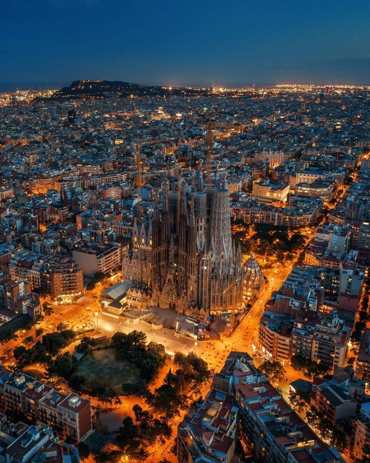
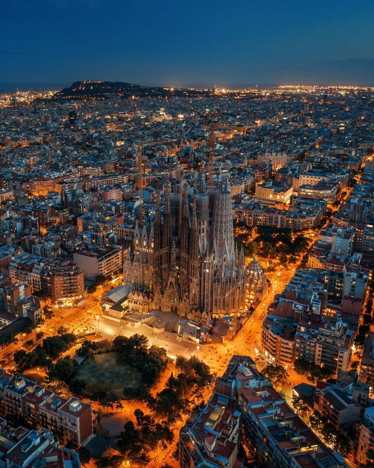
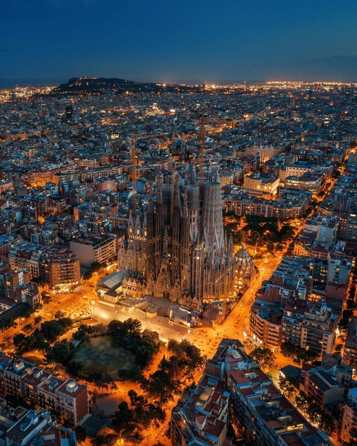
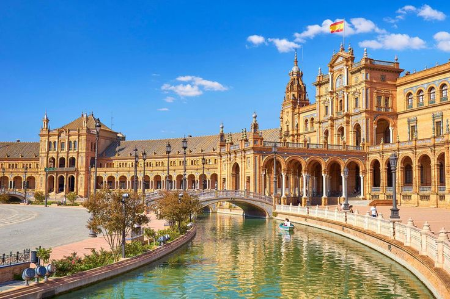
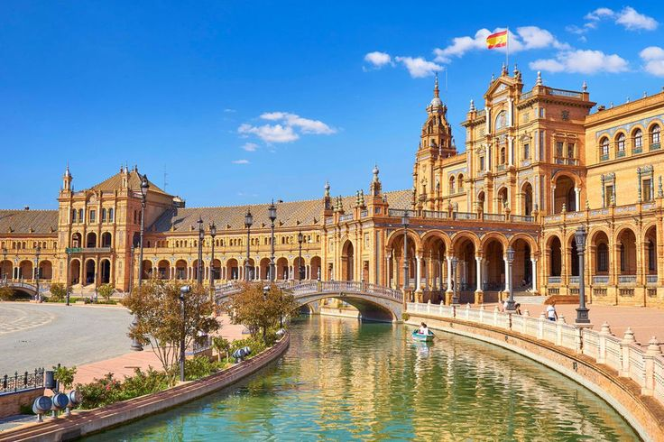
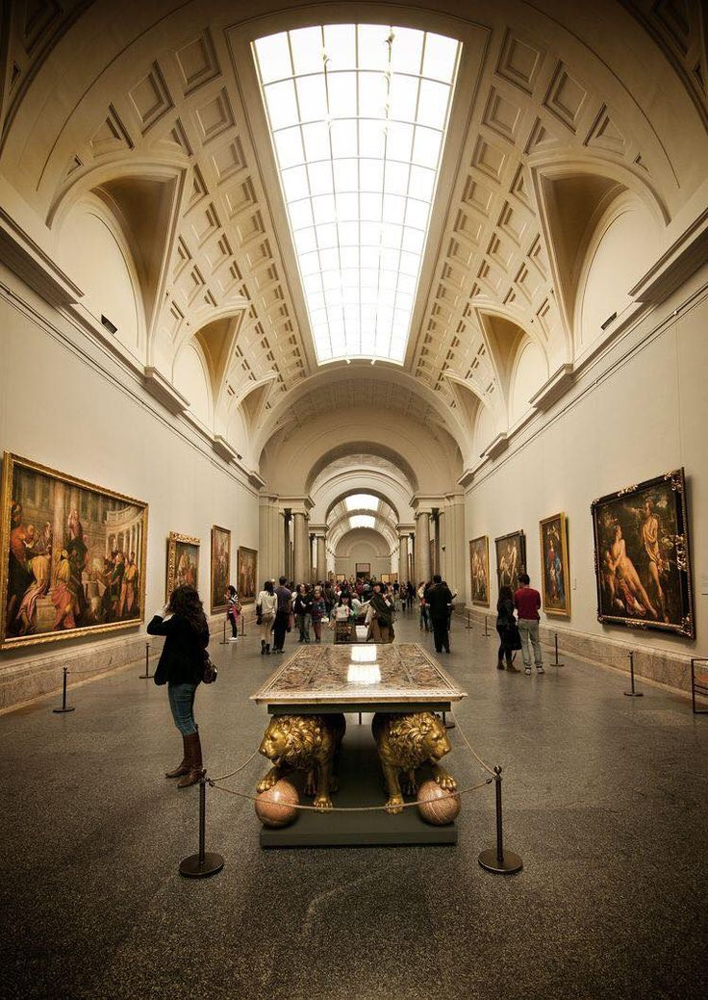
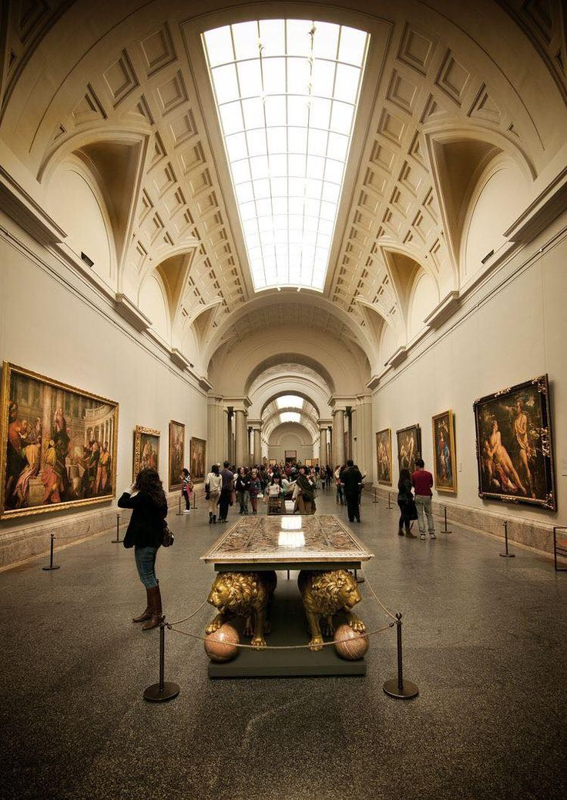

Spain, as a European country, has a rich cultural heritage, a diverse geography, and a variety of landscapes that attract tourists. Additionally, the country has a rich history, including its role in the exploration and colonization of the Americas during the Age of Discovery.

Sagrada Família is a massive Roman Catholic church in Barcelona, Spain. Designed by the Catalan architect Antoni Gaudí, it is one of the most recognized examples of the modern architecture style known as "Modernisme" or Catalan Modernism.

 

Plaza de España is a large public square in Seville, Spain. It was designed by architect Aníbal González for the Ibero-American Exposition of 1929. The square is surrounded by beautiful buildings and canals, making it one of the most iconic landmarks in Seville.
 

Museo del Prado is a prominent art museum in Madrid, Spain. Founded in 1819, it holds a large and significant collection of paintings from various European schools, including works by Goya, Velázquez, Rubens, Titian, Caravaggio, and El Greco.